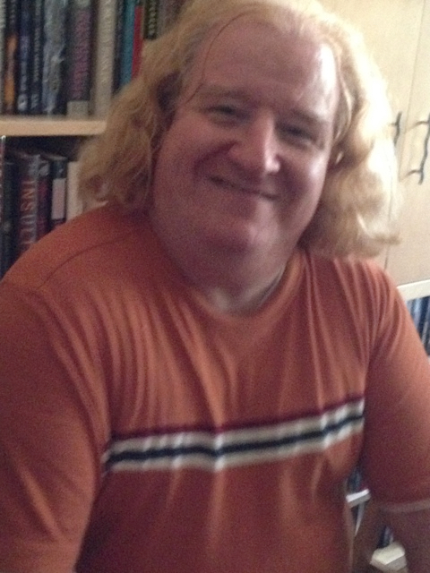

 I consider myself a creative technologist, who will never be finished learning until the day I die. I grew up in a family entrenched in the performing arts, my late father a concert violinist and my late mother, a concert pianist. As we grew up, my siblings and I branched out into experimental theatre and opera. I continue to perform in New York theatrical venues and tour abroad to this day. As the cliché goes, the arts very rarely provide adequate financial support.
I embarked on an autodidactic odyssey in the study of information teaching myself both the rudiments and some more advanced skills that led to consulting work. As interesting as I found the technology, the creative spirit within me insisted that I find an aesthetically creative field in digital media—both desktop publishing and, in the early 2000s, web development and design.Over the ensuing years, I learned a great deal, but found that my autodidactic journey was reaching diminishing returns and I needed to seek out a learning community where I could formalize my training a bit more. Nonetheless, in the period that preceeded, I consistently defied the conventional wisdom that one must specialize exclusively in front- or back-end development and design. This militated against my need to understand the inner workings of things rather than essentially painting by number.
In 2011, I graduated summa cum laude with a BS in Integrated Web Development & Design from the CUNY Baccalaureate for Unique and Interdisciplinary Studies, with Hunter College as my home school in the program. Still not satisfied with the gaps in my knowledge, this was followed by some continuing education courses, and finally my completion of an MS in Integrated Digital Media from NYU Tandon School of Engineering in 2017.
I continue self-study on a daily basis to augment an education that far too often cut corners around project-based learning. Nonetheless I have produced some projects of which I can be proud. This site hearkens back to the era at the dawn of HTML, when very limited styling options were available and were combined as attributes in HTML tags. But it stands as an example of the simple beauty of the information architecture that organizes content into a comprehensible whole.